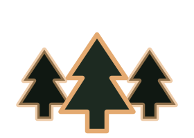

triton ventures - emerging tech breakfast
A local-first desktop workbench for coding agents. It runs on your machine, shows its work while it runs, and keeps the receipts. Prepared for Bill, Zak, and Mike.
arrow keys to walk - click a live demo to play
why now - the room
Find the bottleneck, then build the simplest system around it. Reputation, readiness, re-engagement, reach. We build by his rule: simplify the process before you automate it.
You already publish the vocabulary - harness engineering, loop engineering, sovereign AI. This is the harness itself, working, in the room.
The investor's question never changes: is it durable, and is the moat real? Thin swappable shell, tested engine, and a security floor that fails the build if it slips.
what it is
Spruce Grove is a desktop app that owns no agent logic. Every prompt spawns the spruce-grove CLI in your own working directory and streams the agent's work back as it happens - thinking, tools, and tokens, all live.
A full agent harness, covered by 356 test files (8,119 tests), gated on every push. Tools, hooks, plugins, sessions.
A Tauri 2 webview that owns zero agent logic - so the engine can improve weekly without the shell churning.
Not another model. Not another editor. A harness you can watch, steer, and trust.
why it is different
| tool | what it is | where we part ways |
|---|---|---|
| Cursor | AI-first code editor; repo-routed model calls | Editor-bound. The agent lives in its window, not your machine's shell. |
| Claude Code | Strong terminal agent; Anthropic's own harness | Powerful but closed - you don't own the runtime or its guardrails. |
| Cline | Open-source VS Code agent extension | Editor-bound again; trust is approvals in a sidebar. |
| Windsurf | Agentic IDE with Cascade flows | IDE lock-in; the harness is not separable from the surface. |
| Hermes (Nous) | Open agent: memory, subagents, five sandbox backends | Deep containment at the edge - but the app-trust floor underneath is still yours to build. |
| Spruce Grove | Local-first desktop harness over a tested CLI | Thin shell, swappable engine, live visibility, and a security floor enforced by tests. |
why believe us
Ron Johnson built the Apple Store and the Genius Bar on one idea: a store is not a shelf, it is a place where a person is understood. The Genius Bar existed to diagnose the person, not just the device. Our steward ran that playbook - training thousands of Apple Retail employees across iOS and macOS troubleshooting theory, customer service, and best practice - and made it work in a small-footprint store long before it was easy. Spruce Grove is that same playbook, pointed at a machine.
Acknowledge the human before the fix. The agent listens first and mirrors back your goal before it touches a file.
The service arc: name the problem, agree on the plan, then prove it landed. That is literally the streaming turn.
Direct, kind, no politics. The build fails loudly on drift - the machine gives itself the same feedback.
Teaching as a product, not a cost center. The council is the One-to-One table, with an index card that travels.
live - the shell
The real app, running on a canned bridge. Type anything and send - thinking, tool calls, and token counts stream live.
what it does
Live streaming sessions - the agent's thinking, tool calls with status chips, per-turn token counts, all as they land.
Mic to local Whisper to an editable prompt. The audio never leaves the machine. Speak it, review it, send it.
A panel shows screenshots and the action log while the agent works. Seeing is the trust model.
One keypress: branch, commits, dirty tree,
pull requests, CI - read live from git and gh, not a cached dashboard.
live - the engine
The desktop is one face. The engine also runs headless - in a terminal, in CI, in ACP behind another client. One harness, many doors.
live - the inspector
Open the inspector (Cmd-I) for the repository's own truth - branch, tree, commits, PRs, CI - live. The look-in panel shows what the agent saw while it worked.
why local
The shell adds no network calls of its own - the engine's provider traffic is the only wire.
Personas bind the agent to allowed directories and feature grants, enforced at the action choke points.
Repo access is GitHub's own viewerPermission - no invented roles, no parallel permission system.
the decision layer
This week's sizzle was Jev (TypeSafe, a closed paid API) and Laya (Apache-2.0, 421M params, open weights) - two takes on the same job: not generate text, but return a bounded decision with a confidence you can act on. Routing, scoring, guardrails. The kind of call an agent makes thousands of times a minute.
70-500 ms, ~$0.042 / million input tokens (vendor figures) - fast and cheap, on someone else's rails.
Same problem, open weights you host. Slower to stand up - but nothing upstream can switch it off.
"The hard part arrives after release - when outputs meet real failures, escalation paths, and someone accountable for the threshold."
Live below: open the inspector on project (the tracker read straight from the beads store) and diagnostics (the self-audit floor + the action ledger). Every decision, written down - with someone named for the threshold.
the proof
A recorded agent session replays through the real protocol router on every run. Protocol drift fails loudly, first.
16 Rust unit tests cover the parser seams - streaming, cancellation, resume, inspector feeds, settings.
A Chromium suite drives the real UI JavaScript against a mocked bridge; CI builds on macOS, Windows, and Ubuntu.
Packaged CSP pinned to object-src / base-uri /
form-action / frame-ancestors 'none', and a least-privilege capability surface locked to one window.
Both enforced by guards that fail the suite on drift.
the root
Franklin's Junto was a mutual-improvement circle that turned curiosity into civic infrastructure. Its rules are this grove's constitution - and Triton already runs the same instinct: a non-profit arm publishing a community resource every week.
Zero invented facts. Verify, or say plainly: not verified.
Every session starts from your goal, not the tool's features - the right question is how can this help your designs succeed.
Observe, inquire, prototype - then hand the index card on. That is how a tool reaches a town.
the outlet
Dr. Zack Steelman is launching Vibe Studio at the University of Arkansas (Walton College of Business): students get access to the tools on day one - micro-grants and hardware loans so cost is not the gate - and they build across every major, not just CS. A campus full of first builds is the widest door this harness will ever find.
"Every learner a trainer" - observe, inquire, prototype, hand the index card on. Vibe Studio is that Junto rule, running at scale.
Day-one access without a sovereign floor teaches a dependency before it teaches a craft. Students rent a closed cloud tool by default.
Vibe Studio is the distribution. Spruce Grove is the local-first harness underneath it - the work stays theirs, on their machine.
the ask
Bring one task. One you would love to never do again. Speak it out loud; the council hears it, the machine builds it.
One door. A Triton-lineage team for a real pilot - or a campus door. Vibe Studio puts this in front of every major at once.
Your perspective in the room. Owners' pride, customers' thumbs, the town's habits - before any build. That is why it fits when it ships.
the invitation
Give it a real task in a real repository - today, in this room. And if the shape of this resonates, the follow-up is a conversation, not a demo - or a seat at the council table, where the next task is already waiting.